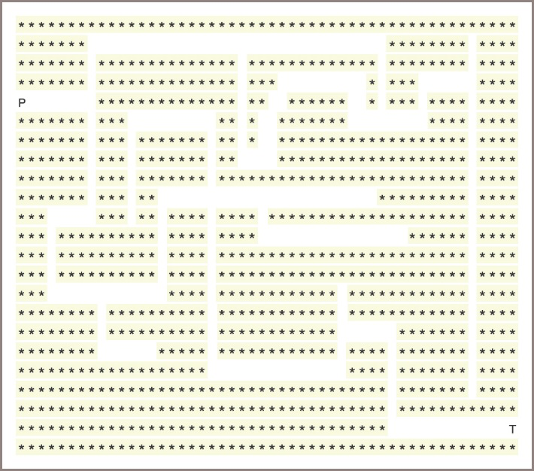
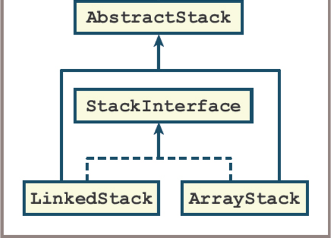
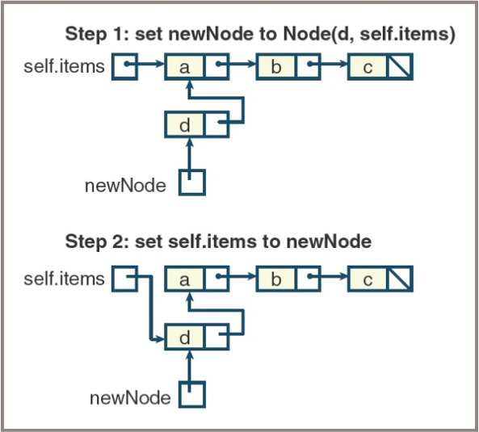
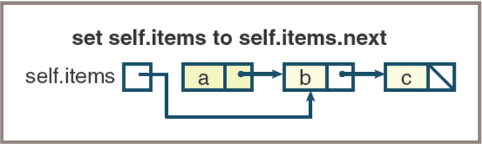

Stacks Application
Fred Agbo
2025-02-25
Announcements
- Welcome back!
- Midterm exam is next week Wednesday during class hours.
- Those with AES accommondation:
- Contact the testing center ASAP to book a spot for the test.
- Copy me in the email to the
Testing Center - No correspondence from Testing Center means you’re taking the exam in class
- Solution to
practice questionsare posted on Canvas
- Those with AES accommondation:
Application of Stack: Backtracking!
What is a Backtracking Algorithm?
- A backtracking algorithm is a general algorithmic technique that considers searching every possible combination in order to solve a computational problem.
- It incrementally builds candidates to the solutions and abandons a candidate (“backtracks”) as soon as it determines that the candidate cannot possibly lead to a valid solution.
- Commonly used for problems like puzzles, pathfinding, and combinatorial optimization (e.g., Sudoku, N-Queens, Maze solving).
What is a Backtracking Algorithm?
- Begins in a predefined starting state and moves from state to state in search of a desired ending state
- If the algorithm reaches a state that represents an undesirable outcome, it backs up to the last point at which there was an unexplored alternative and tries it
- Two principal techniques for implementing backtracking algorithms
- One uses stacks
- The other uses recursion
Backtracking Algorithm
- The role of a stack in the process is to remember the alternative states that occur at each juncture:
- Consider the problem of finding a path out of a maze
- 
Sample backtracking algorithm:
Create a new stack
Locate the character 'P' in the grid
Push its location onto the stack
While the stack is not empty
Pop a location, (row, column), off the stack
If the grid contains 'T' at this location, then
A path has been found
Return True
Else if this location does not contain a dot
Place a dot in the grid at this location
Examine the adjacent cells to this one and
for each one that contains a space,
push its location onto the stack
Return False
Memory Management (1/7)
- During a program’s execution, both its code and its data occupy computer memory
- The computer’s run-time system must keep track of various details that are invisible to the program’s author, which include the following:
- Associating variables with data objects stored in memory so they can be located when these variables are referenced
- Remembering the address of the instruction in which a method or function is called, so control can return to the next instruction when that function or method finishes execution
- Allocating memory for a function’s or a method’s arguments and temporary variables, which exist only during the execution of that function or method
Memory Management (2/7)
- A Python compiler translates a Python program into bytecodes:
- A complex program called the
Python Virtual Machine (PVM)then executes these - The memory, or run-time environment, controlled by the PVM is divided into six regions:
- Object heap
- Unused memory
- Call stack
- Module and class variables
- Program bytecode for all methods
- Python Virtual Machine
Memory Management (3/7)
- Architecture of a run-time environment

Memory Management (4/7)
- The activation records shown in the figure contain two types of information:
- The regions labeled Temporary Variables and Parameters hold data needed by the executing subroutine
- The remaining regions hold data that allow the PVM to pass control backward from the currently executing subroutine to the subroutine that called it
Memory Management (5/7)
- When a subroutine is called, the PVM performs the following steps:
- Creates the subroutine’s activation record and pushes it onto the call stack
- Saves the
basePtr’scurrent value in the region labeledPrevbasePtr and sets thebasePtrto the new activation record’s base - Saves the
locationCounter’scurrent value in the region labeledReturn Addressand sets thelocationCounterto the first instruction of the called subroutine - Copies the calling parameters into the region labeled
Parameters - Starts executing the called subroutine at the location indicated by the
locationCounter
Memory Management (6/7)
- When a subroutine has finished executing, the PVM performs the following steps:
- Reestablishes the settings needed by the calling subroutine by restoring the values of the
locationCounterand thebasePtrfrom values stored in the activation record - Pops the activation record from the call stack
- Resumes execution of the calling subroutine at the location indicated by the
locationCounter
- Reestablishes the settings needed by the calling subroutine by restoring the values of the
Memory Management (7/7)
- Example of recursive Factorial:

Stacks Implementations
- Stacks are implemented easily using arrays or linked structures
- The following sections show that there are trade-offs involved in using these two recurring approaches
- Two stack implementations are the classes
ArrayStackandLinkedStack - Before we develop these, you are provided with a short
tester programthat shows how you can test them immediately- The code, provided in a couple of slides from here, exercises all the methods in any stack implementation and gives you an initial sense that they are working as expected:
- Two stack implementations are the classes
Stacks Implementations
- Implementation of stacks uses inheritance concepts:
- A base class defines common stack behaviors and properties.
- Subclasses (
ArrayStack,LinkedStack) inherit from the base class and provide specific implementations. - This promotes code reuse and enforces a consistent interface for different stack types.
- Consider we want to make
ArraySortedBagclass, a subclass of theArrayBagclass:ArrayBagis called the parent or superclass ofArraySortedBag- Because the
ArrayBagclass implementsBagInterface, theArraySortedBagclass also implements this interface via inheritance
Using Inheritance to implement Stacks
ArrayStackandLinkedStack- Implement the same interface, called StackInterface
- Are subclasses of the
AbstractStackclass, which in turn is a subclass ofAbstractCollection - Inherit the add method from the
AbstractStackclass, the size variable, and the methodsisEmpty,__len__,__str__,__add__, and__eq__fromAbstractCollection
- The only methods that need to be implemented in
ArrayStackandLinkedStackare_init_,peek,push,pop,clear, and_iter_
Stacks Collections Hierarchy
The stack resources in the collection hierarchy

Implementing AbtractStack
class AbstractStack(object):
"""Abstract class that implements the common
methods for stack collections"""
# Constructor
def __init__(self, sourceCollection=None):
self.size = 0
if sourceCollection:
for i in sourceCollection:
self.push(i)
def isEmpty(self):
"""Returns True if stack is empty. Otherwise, returns False
"""
return len(self) == 0
def __len__(self):
"""Returns the number of items in stack
"""
return self.size
def __str__(self):
"""Returns the string repsentative of S
"""
return "{" + ", ".join(map(str,self)) +"}"Implementing ArrayStacks
from arrays import Array
from abstractstack import AbstractStack
class ArrayStack(AbstractStack):
"Array-based stack collections"
# Array inital capacity
DEFAULT_CAPACITY = 10
#Constructor
"""Initializes the state of self which include any items from sourcecollector"""
def __init__(self, sourceCollection = None):
self.items = Array(ArrayStack.DEFAULT_CAPACITY)
AbstractStack.__init__(self, sourceCollection)
# Accessors
def __iter__(self):
"""Supports iteration over self. Visits items bottom to top of stack"""
cursor =0
while cursor < len(self):
yield self.items[cursor]
cursor +=1
def peek(self):
if self.isEmpty():
raise KeyError("The stack is empty")
return self.items[len(self)-1]
# Mutator functions
def push(self, item):
#resize the array here if neccesary
self.items[len(self)] = item
self.size +=1
def clear(self):
self.size =0
self.items = Array(ArrayStack.DEFAULT_CAPACITY)
def pop(self):
#Check the precondition that the stack is not empty
if self.isEmpty():
raise KeyError("The stack is empty")
oldItem = self.items[len(self)-1]
self.size -=1
# resize the Array here if necessary
return oldItemTesting ArrayStacks
"""
A tester program for stack implementations.
"""
from arraystack import ArrayStack
#from linkedstack import LinkedStack
def test(stackType):
# Test any implementation with the same code
s = stackType()
print("Length:", len(s))
print("Empty:", s.isEmpty())
print("Push 1-12")
for i in range(12):
s.push(i + 1)
print("Peeking:", s.peek())
print("Items (bottom to top):", s)
print("Length:", len(s))
print("Empty:", s.isEmpty())
theClone = stackType(s)
print("Items in clone (bottom to top):", theClone)
theClone.clear()
print("Length of clone after clear:", len(theClone))
print("Push 11")
s.push(11)
print("Popping items (top to bottom):", end = " ")
while not s.isEmpty(): print(s.pop(), end = " ")
print("\nLength:", len(s))
print("Empty:", s.isEmpty())
test(ArrayStack)
#test(LinkedStack)Array Stacks Implementations
- The first implementation is built around an array called self.items and an integer called self.size
- shows how self.items and self.size appear when four items are on the stacks

Linked Stacks Implementations
- The linked implementation requires two classes:
LinkedStackandNode
- The Node class contains two fields:
- data — An item on the stack
- next — A pointer to the next node
- Because new items are added to and removed from just one end of the linked structure, the methods pop and push are easy to implement, as shown in Figures on the next slides.
Linked Stacks Implementations
- Pushing an item onto a linked stack
- 
Linked Stacks Implementations
- Popping an item from a linked stack
- 